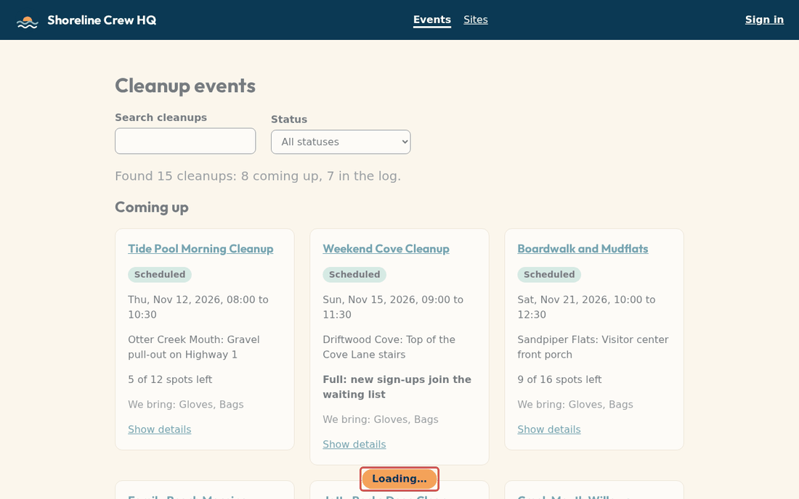

React + TypeScript · Part 2 · Session 16 of 26 · 3 hours
Session 16
Data Loading and Protected Routes
The page arrives with its data, and only for the people it is for.
Today
Three hours, one lesson, one kickoff
| 0:00 | Warm-up: from Session 15 to guarded routes |
| 0:10 | 6.3 Loaders and route answers: model, demo, lab |
| 1:05 | Break (10 min) |
| 1:15 | 6.3 Guards, the store, an action: demo, lab |
| 1:50 | 6.3 Project: Steps 1 and 2 |
| 2:20 | Part 2 project kickoff: Basalt Peak Routes |
| 2:50 | Exit ticket, homework, what to bring next time |
LABS Lab files are in
labs/module-16; the project in labs/projects.Warm-up · 10 minutes
From Session 15
- Signed out, you typed
/events/new: what appeared? Who really stops a guest? 'status'from the address: which type, and how was it made safe?- Where does a child route render? What happens to its parent?
CATCH UP Behind? Unzip
lesson-23-start, npm install, start the API.6.3
Data Loading and Protected Routes
The harbor master clears the boat before it moves.
6.3 · Mental model
Render then fetch, or load then render
- Render then fetch
- A flash on every visit
- Back cannot find your place
- Rules arrive late
- Load then render
- The old page stays meanwhile
- The page arrives with its data
- A guard decides first
WHY Not for a search box: the events list keeps useApi until Lesson 7.1.
6.3 · The harbor master
Three things a loader can do
- Hand over the tide table: the route's data
- Send the boat to another dock first:
throw redirect() - Post a notice:
throw data(message, { status }) - The page only ever sees a boat cleared to go
WHY Lesson 7.1 adds a cache under these loaders; the shape stays.
6.3 · Live demo
The smallest loader
shoreline-hq/src/pages/loaders.ts
/** /sites: the six beach sites */ export function sitesLoader({ request }: LoaderFunctionArgs) { // request.signal: leaving the page before the answer arrives cancels the request return getSites(request.signal) }
WHY The page:
useLoaderData<typeof sitesLoader>() with an import type.6.3 · Live demo
Ask TypeScript what each Hook returns
src/Scratch.tsx:7:9 - error TS2322: Type 'Site[]' is not assignable to type 'number'.
src/Scratch.tsx:8:9 - error TS2322: Type '{ event: CleanupEventDetail; impact: Promise<ImpactReport> | null; }' is not assignable to type 'number'.
src/Scratch.tsx:9:9 - error TS2322: Type 'SignInResult | undefined' is not assignable to type 'number'.
Found 3 errors in the same file, starting at: src/Scratch.tsx:7
WHY Three exact types. Line 10, the untyped call, says nothing: it is any.
6.3 · Live demo
useLoaderData() without its type
import { useLoaderData } from 'react-router' // No type argument: useLoaderData() returns any, so this typo compiles export function Scratch() { const sites = useLoaderData() return <p>{sites[0].nmae}</p> }
WATCH
npx tsc -b prints nothing: the typo compiles. Always pass typeof yourLoader.6.3 · When loading fails
The 404 becomes a route answer
shoreline-hq/src/pages/loaders.ts
try { const event = await getEvent(eventId, request.signal) // Not awaited: the page shows without it, and the report follows (use() + Suspense) const impact = event.status === 'completed' ? getImpact(eventId) : null return { event, impact } } catch (error: unknown) { if (error instanceof ApiError && error.status === 404) { const message = 'There is no cleanup at this address. The link may be wrong, or the cleanup is not public.' throw data(message, { status: 404, statusText: 'Cleanup not found' }) } throw error }
WHY Throw, do not return: TypeScript infers only what is returned.
6.3 · One error page
Answers and crashes, told apart
shoreline-hq/src/pages/ErrorPage.tsx
const error = useRouteError() const location = useLocation() const navigate = useNavigate() // A loader's answer (thrown with data()) carries a status, a heading and a message const answer = isRouteErrorResponse(error) ? error : null const heading = answer?.statusText || 'Something went wrong on this page' useDocumentTitle(heading)
WHY
useRouteError() is unknown; the predicate narrows it. An answer is not an alarm.6.3 · One error page
Cleanup not found

WHY With the API stopped: "Could not reach the server…" and Try again.
6.3 · What can wait
Await it, or return a promise
- Await in the loader
- The page makes no sense without it
- It decides the answer (404, redirect)
- The cleanup itself
- Return as a promise
- A part can say Loading for a moment
- Slow or optional; may fail alone
- The impact report: use() + Suspense
WHY Loader data is stable, so eventPromises.ts can go.
6.3 · While the loader runs
One pending sign for every page

WHY
useNavigation().state === 'loading' in AppLayout; role="status" for screen readers.6.3 · Guided lab · 20 minutes
A site desk with a typed loader
labs/module-16/l6_3-data-loading-and-protected-routes/starternpm installonce ·npm test: 8 fail · typecheck: 1 error- Task 1:
siteLoader, the 404 asSite not found useLoaderData<typeof siteLoader>()and the ErrorPage
HINT Return the data() answer instead of throwing it? Watch the type test.
10
Break
Back at 1:15. No end of Lesson 6.2 yet? Unzip lesson-23-start now.
6.3 · Protected routes
A guard is a loader that throws
shoreline-hq/src/auth/guards.ts
export function organizersOnly({ request }: LoaderFunctionArgs) { const session = readSession() if (session === null) { // Remember the page (and its ?search) so the sign-in page can send people back to it const { pathname, search } = new URL(request.url) throw redirect(`/sign-in?next=${encodeURIComponent(pathname + search)}`) } if (session.user.role !== 'organizer') { const message = "This page has the crew's contact details and planning tools, so only organizers can open it." throw data(message, { status: 403, statusText: 'Organizers only' }) } return null }
WHY Guests: a redirect with the way back. The wrong role: a 403 answer, no loop.
6.3 · GET /api/volunteers
The guard is a courtesy; the API is the lock
HTTP/1.1 401 Unauthorized
{
"error": "unauthorized",
"message": "Sign in first."
}
HTTP/1.1 403 Forbidden
{
"error": "forbidden",
"message": "Only organizers can do that."
}
WHY No token, then a volunteer's token. Never put in front-end code what a guard should hide.
6.3 · ?next=
Only paths inside the app
%2Fvolunteers%3Fskill%3Dfirst-aid /volunteers?skill=first-aid -> /volunteers?skill=first-aid events -> / //example.com -> / https://elsewhere.example -> / /\elsewhere.example -> /
WATCH The stage's own
nextPath, run in Node. Anything else: an open redirect.6.3 · Guards
Organizers only

WHY 401: who are you? 403: I know who you are, and no.
6.3 · A session outside React
The store in client.ts
shoreline-hq/src/api/client.ts
/** Save (or with null, forget) the session, and tell everyone who listens */ export function saveSession(session: Session | null): void { if (session === null) { sessionStorage.removeItem(sessionKey) } else { sessionStorage.setItem(sessionKey, JSON.stringify(session)) } current = session for (const listener of listeners) { listener() } }
WHY AuthProvider:
useSyncExternalStore(onSessionChange, readSession).6.3 · Common mistake
A Hook in a loader
╭─[src/auth/guards.ts:20:23]
18 │ /** For pages with contact details and planning tools: guests sign in first, volunteers are turned away */
19 │ export function organizersOnly({ request }: LoaderFunctionArgs) {
· ───────┬──────
· ╰── Outer function
20 │ const { session } = useAuth()
· ───┬───
· ╰── Hook is called here
21 │ if (session === null) {
╰────
WATCH tsc is quiet; oxlint says ERROR. A loader has no render for a Hook to belong to.
6.3 · Actions
The sign-in form's action
shoreline-hq/src/auth/signInAction.ts
try { saveSession(await postSignIn({ email, password })) } catch (error: unknown) { // The API's answers are written for people: "Enter your password.", "Email or password is incorrect." if (error instanceof ApiError && error.fieldErrors !== undefined) { return { email, fieldErrors: error.fieldErrors, message: '' } } if (error instanceof ApiError && error.status === 401) { return { email, fieldErrors: {}, message: error.message } } console.error(error) return { email, fieldErrors: {}, message: describeError(error) } }
WHY Errors return a result; success throws
redirect(nextPath(...)); loaders run again.6.3 · Two kinds of form action
React 19 or React Router?
- useActionState (3.5, 5.2)
- Lives in the component
- Redirect: navigate yourself
- React resets the fields
- Route action (today)
- Lives on the route
- throw redirect() first
- Fields keep what was typed
WHY The HQ empties the password itself: a ref and an effect on the result.
6.3 · One guard, many pages
The pathless guard route
shoreline-hq/src/App.tsx
// Organizers only: this guard runs before any of these pages appears loader: organizersOnly, shouldRevalidate: onlyWhenThePathChanges, children: [ { path: 'events/new', element: <NewEventPage /> },
WATCH shouldRevalidate: without it, typing in the crew search threw the cursor to the end.
6.3 · Guided lab · 15 minutes
The guard, then the child loader
- Task 2:
nextPath,crewOnly, the pathless guard route - One test still fails? Read its message
- Parent and child loaders run at the same time:
crewOnly(args)first - Task 3 at home: the sign-in action
MEASURED Without the call: Tests 3 failed | 5 passed (8).
6.3 · Project · Steps 1 and 2
Guarded, Preloaded HQ
src/pages/loaders.ts,ErrorPage.tsx, SitesPage reads its loader- EventPage reads
useLoaderData<typeof eventLoader>() - ImpactSummary
use()s a promise; deleteeventPromises.ts npx tsc -bandnpm run lintclean (the kit measured it)
PROJECT Half-wired until Step 5: pages that read loader data show the error page. Expected.
P2
Part 2 Project
Basalt Peak Routes for Basalt Peak Climbing Gym
Part 2 project · the client
Basalt Peak Climbing Gym
- Dana Okonkwo-Reyes, head route setter, in Millbrook
- Four walls, reset every week; a whiteboard nobody can read
- Routes by wall and grade; a page per route to text people
- Setters log routes from a phone; staff may look, not log
WHY Read the email in
BRIEF.md. The API is given; your work is in src/.Part 2 project · requirements
R1 to R6, one rubric row each
- R1 Routing (6.1, 6.2)
- R2 Data layer and errors (4.1, 4.2, 6.3)
- R3 The address holds the filters (6.2)
- R4 Typed context and the protected route (5.2, 6.3)
- R5 The reducer and the write (5.1, 4.2)
- R6 Quality (all of Part 2, 3.6)
RUBRIC Each row 0, 1 or 2. Complete = no row at 0. Part 2 met = complete AND 14 of 20 in Session 17.
Part 2 project · two terminals
npm run api, then npm run dev
ok GET /walls -> 200, 4 walls: the-slab, the-cave, the-prow, kids-corner
ok GET /routes -> 200, 9 active routes (X-Total-Count: 9)
ok GET /routes?status=retired -> 200, 3 retired routes
ok GET /routes?wall=the-cave&grade=V4 -> 200: Bat Hang
ok GET /routes/r99 -> 404 not_found
…
ok PATCH /routes/:id {"status":"retired"} -> 200, retired
Smoke test passed: the API answers as the brief says.
WHY The gym's API on 4400, next to shoreline-api's 4000.
node api/smoke.ts ends like this.Part 2 project · as handed out
Every test waits for a TODO
× R1 an address the app does not know shows Page not found, inside the layout × R1 the header link opens the routes list and marks it as the current page × R2 the home page counts the active routes on each wall (a loader) × R2 a route has its own address and page × R2 an id the API does not know is a 404: Route not found × R2 the client checks every answer and turns error answers into ApiErrors … Tests 12 failed (12)
WHY
npx tsc -b and npm run lint are clean: the TODOs are runtime work.Part 2 project · milestones
Tonight, Session 17, the hand-in
- Tonight: both terminals running, BRIEF and TASKS read, R1 started
- Session 17: R1 and R2 working, R3 started; one question
- One week after Session 17: everything, with NOTES.md
- Alone or in pairs; open book; no new packages
PROJECT Session 17 also holds the Part 2 assessment: written, closed book, 45 minutes, 20 points; 14 or more is met.
Wrap-up · 4 minutes
Exit ticket
- A guest opens
/volunteers?skill=first-aid: what runs first, where do they end? - One failure for
data(), one to let through to the error page - Your first Part 2 milestone, and who you work with
WHY No notes. Workbook Exit Ticket box or a sticky note on the way out.
Before Session 17
Homework and bring list
- Finish the 6.3 project (Steps 3 to 6); Exercises 1 and 2; quiz; journal
- Lab: Task 3 and the stretch
- Part 2 project: R1 and R2 working, R3 started, and one question
- Bring: the project, the HQ at the end of 6.3, a charged laptop
NEXT Session 17: the project check-in and the written Part 2 assessment (written, closed book, 45 minutes, 20 points; 14 or more is met).